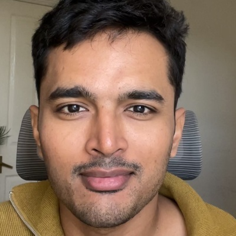

Hey there 👋
I am a Senior Data Scientist at Skyscanner, where I built our in-house Bayesian AB experimentation library, WISE. Currently, I develop ML models to rank flight search results. I have over a decade of experience in data science, analytics, ML model development, and AB experimentation. I enjoy deep diving into the math behind algorithms I use. Python is my go-to language, and I am always looking to sharpen my technical skills.
I stay away from most social media, but I do check my LinkedIn regularly.
